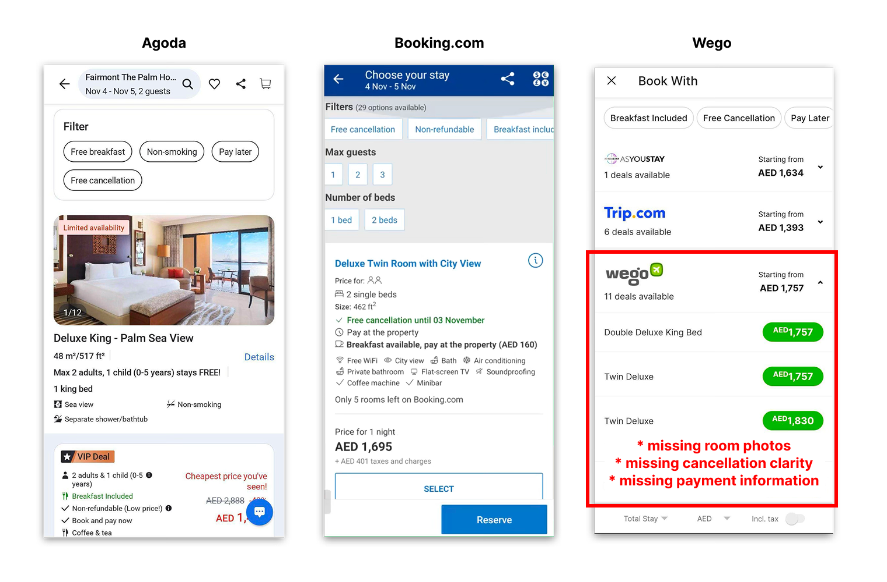
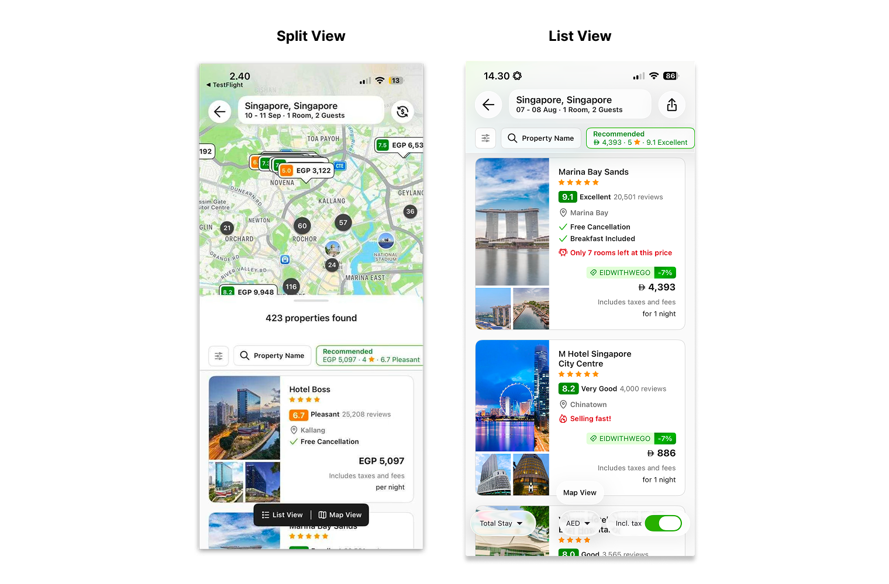

Building the Research Foundation for Wego's Shift into Hotel Booking
Some details have been intentionally generalized or omitted due to confidentiality.
Opening context
For years, Wego helped users compare hotel prices, then redirected them elsewhere to complete the booking.
Then the company decided to become a hotel booking platform itself.
The problem: nobody fully understood what users needed to feel confident booking on Wego.
The research question
What was stopping users from booking hotels on Wego — and what needed to change before Wego could compete with Booking.com and Agoda?
How I approached it
I ran a multi-method research program across the full hotel booking journey:
- Competitive usability testing across 8 booking platforms
- Interviews and card sorting to understand how users choose rooms
- Heatmap and session recording analysis
- Usability testing in English and Arabic
- Survey of 41 users across the Middle East
What I found
Finding 01
Wego was missing booking patterns users already expected
The issue was not one broken screen. The product was missing interaction patterns users had already learned from other booking platforms.
Users struggled with four specific gaps:
- ✗Comparing rooms across properties
- ✗Understanding cancellation policies
- ✗Seeing payment flexibility options
- ✗Finding key booking information quickly

Finding 02
Trust was not the real barrier
The team assumed users avoided booking because they did not trust Wego enough.
The research showed the opposite.
Users trusted Wego as a travel platform. The real barrier was flexibility — loyalty rewards, easier cancellation, and deferred payment options.
One finding changed the roadmap immediately.
78% of users said they would leave if their preferred payment method was unavailable. This moved payment flexibility from a nice-to-have to a strategic priority.
Finding 03
Users liked the redesign, but the interaction details created friction
Wego launched a redesigned hotel search with a split-view layout — hotel list and map shown together on one screen. The redesign underperformed in A/B testing.
But usability testing revealed something unexpected: users actually preferred the redesign. The usability score improved significantly.
System Usability Scale (SUS) scores — higher is better. The redesign scored 15 points higher, crossing from "OK" into "Good" range.
The real problems were in the interaction layer, not the design concept:
- ✗Users ignored the map and went straight to the list
- ✗The map/list toggle was unclear
- ✗Price controls were buried inside filters

What changed
The research shifted the roadmap away from trust-building and redirected product priorities entirely.
- Focus on trust-building features
- Forced split-view search
- Price controls in filters
- Flexible payment options on roadmap
- Loyalty features prioritized
- Cancellation improvements added
- Split-view emphasis reduced
- Pricing visibility improved
Reflection
This project taught me that product teams often try to optimize individual screens before understanding the full user expectation model first.
Once the team understood the booking patterns users already expected from competitors, product decisions became much easier to prioritize.